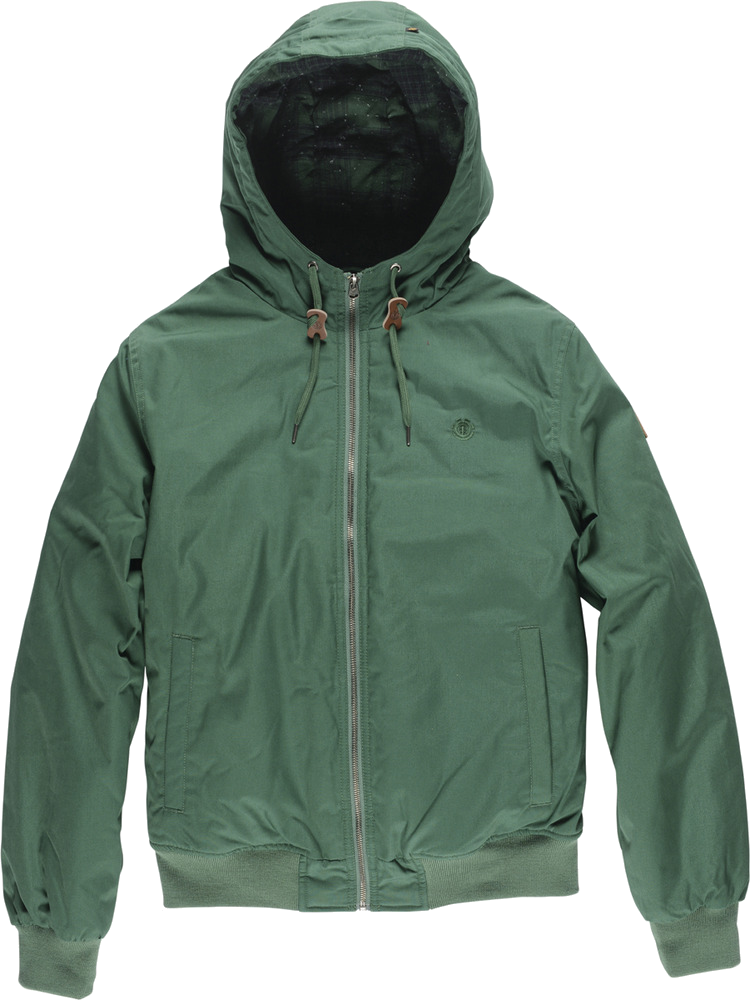

|  | Dulcey Vert La Dulcey fait partie de notre collection Wolfeboro exclusive. Chaque pièce de cette gamme est en série limitée et présente des attributs classiques du style Element, fusionnés dans une fabrication, une construction et une qualité très solides. Cette veste en toile apporte un touche de fraîcheur au mélange avec sa doublure en flanelle et ses touches de cuir. |
| 135 € |
| Utilisateur 4186 |
Longtemps que je n'avais pas été charmé par un vêtement vert ! Une vraie surprise, ravi de l'achat. |
| Utilisateur 7124 |
Une couleur qui peut paraître triste mais pas tant que ca, couplé à un confort exceptionnel, un achat totalement validé. |